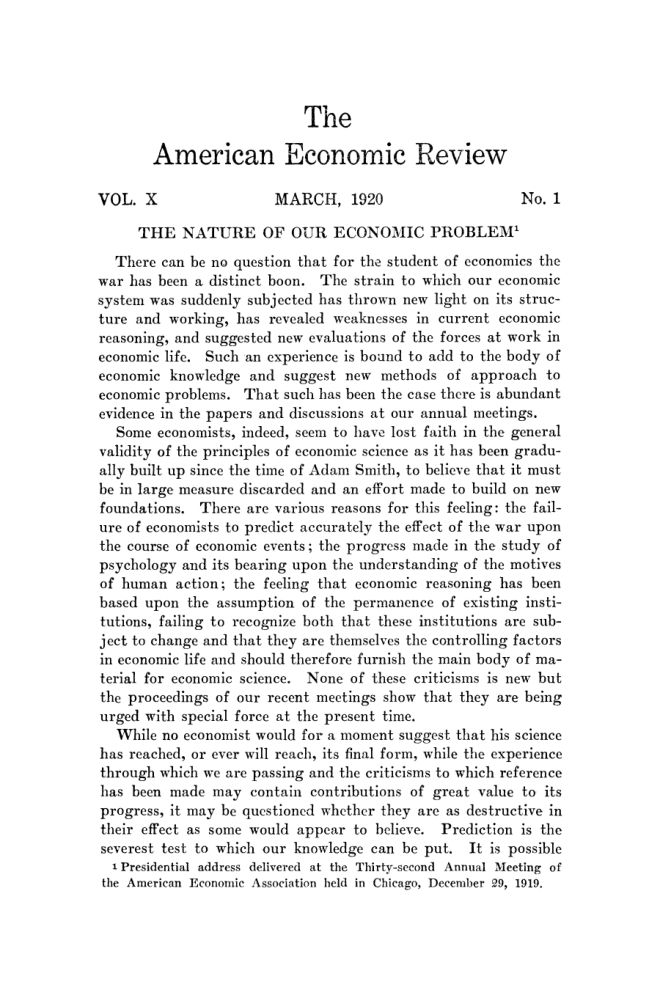

Gardner e o limite da redistribuição
Leitura: 8 min
No discurso presidencial de 1919, Henry B. Gardner defende a teoria econômica contra os críticos, faz as contas da renda nacional e conclui que o problema central é aumentar a produção por habitante.


O discurso que Henry B. Gardner, da Brown University, leu como presidente da American Economic Association na reunião anual de Chicago, em 29 de dezembro de 1919, começa com uma frase pouco esperada naquele momento: para o estudante de economia, a guerra fora uma bênção. A tensão súbita sobre o sistema econômico iluminara sua estrutura, expusera fraquezas do raciocínio corrente e sugerira novas avaliações das forças em jogo.
O texto, que abre a American Economic Review de março de 1920, tem um alvo dentro da profissão. Alguns economistas, diz Gardner, pareciam ter perdido a fé na validade geral dos princípios acumulados desde Adam Smith e queriam recomeçar sobre novas bases. As razões eram três: o erro em prever os efeitos da guerra, o avanço da psicologia sobre os motivos da ação humana e a ideia de que a teoria tomava como permanentes instituições que mudam e que, além disso, comandam a vida econômica.
Os economistas erraram na guerra?
Gardner responde que a previsão é o teste mais severo do conhecimento e só é segura quando as forças em ação são poucas e bem compreendidas. Admite os erros: muitos subestimaram a reserva de trabalho que as nações modernas podem mobilizar e previram que o esgotamento financeiro encerraria a guerra mais cedo. Previram também uma alta de juros antes do que ocorreu. Mas, sustenta, acertaram as forças fundamentais e erraram o prazo. A alta já começara nos investimentos de longo prazo; no curto prazo, era retardada pelo sistema de redesconto do Federal Reserve, pela entrada de ouro nos primeiros anos da guerra e por cerca de 25 bilhões de dólares em títulos da dívida pública, usados como garantia de empréstimos a juros baixos.
O mesmo valeria para os preços. Em 1914, diz, quase todos os economistas esperariam alta durante a guerra e queda depois; os preços continuavam a subir, e muitos duvidavam da queda. Gardner prevê que ela virá, a menos que a produção caia de forma permanente ou que o mundo desista de sair do papel-moeda depreciado, e acrescenta que, quando vier, os juros reais terão subido mais depressa que os nominais. Arrisca uma segunda previsão: os Estados Unidos, que passaram de devedores a credores, verão as importações crescerem em relação às exportações, apesar do excedente comercial mantido desde 1873.
A guerra, por outro lado, confirmou o que se ensina em qualquer curso elementar: os fatos econômicos fundamentais são os mesmos numa economia complexa e numa comunidade primitiva; o poder econômico de um povo é sua capacidade de produzir os bens de que precisa; para produzir mais de uma coisa é preciso consumir menos de outra; poupar é condição para criar capital; e as finanças de guerra são apenas o meio de pôr trabalho e capital à disposição do governo. O lema “negócios como sempre”, em plena emergência, era uma falácia evidente.
Basta redistribuir a renda?
A parte central do discurso ataca uma suposição que Gardner encontra até entre economistas e sociólogos: a de que a máquina resolvera o problema da produção e só restava o da distribuição. Para ele, o aumento da capacidade produtiva por habitante foi superestimado. Compara-se a fiação moderna com a roca, esquecendo o trabalho gasto em construir a fábrica e o que continua no algodoal; compara-se o frete ferroviário com o de carroça, esquecendo que as distâncias aumentaram. Os ganhos foram grandes na manufatura, na mineração e nos transportes, e pequenos na agricultura e no comércio, onde está boa parte do trabalho que produz o necessário à vida. A vida urbana exigiu ainda ruas pavimentadas, esgotos, água, polícia e proteção contra incêndio.
Os números vêm das estimativas de renda nacional de King para os Estados Unidos e de Bowley para o Reino Unido, feitas pouco antes da guerra. Descontadas a poupança e a parte dos impostos não repassada ao consumidor, restariam cerca de 26 bilhões de dólares para as despesas de consumo. Divididos por igual, com o devido ajuste por idade, dariam cerca de US$ 1.300 por ano a uma família de pai, mãe e três filhos menores de quinze anos. Segundo Chapin, em 1907 eram precisos US$ 900 para as necessidades físicas de uma família assim em Nova York.
Mesmo tomando das famílias acima de US$ 3.000 todo o excedente, menos a poupança, e distribuindo-o aos mais pobres, seria concebível estabelecer por um momento uma renda familiar mínima de US$ 1.000. Gardner considera que nenhuma redistribuição desse porte, por impostos ou por salários, se faria sem uma queda da produção maior que a soma distribuída. Admite que os números já não valiam para 1920, com os valores monetários dobrados e a guerra favorecendo os mais ricos na distribuição, mas sustenta que não havia sinal claro de aumento permanente da produção por habitante.
“Um paliativo de potência comparativamente pequena.” (“a palliative of comparatively small potency.”)
A conclusão é que o remédio para a condição dos mais pobres deve ser buscado sobretudo no aumento de sua produtividade marginal: por eficiência maior, pelo uso mais inteligente da riqueza e por um número de trabalhadores menor em relação aos outros fatores de produção. Gardner observa que a guerra deixara cerca de dez milhões de trabalhadores a menos no mundo industrial do Ocidente, o que abria a possibilidade de um padrão de vida mais alto e duradouro, mas ainda apenas uma possibilidade.
O que é engenharia econômica?
O problema, para Gardner, tem ao menos cinco fases: eficiência individual, questão de saúde e educação, inclusive o treinamento na oficina e na fazenda; organização industrial que elimine desperdício sem enfraquecer os motivos do progresso; cooperação entre os fatores dentro de cada estabelecimento; equilíbrio entre os fatores de produção, para que a produtividade marginal de nenhuma classe caia abaixo do necessário a uma vida saudável; e uso racional da riqueza. Na segunda, o economista pode prestar o maior serviço, mas falta-lhe conhecer o funcionamento real do sistema. Gardner pede que as informações reunidas pelos órgãos de guerra e pela administração dos impostos sobre renda e lucros sejam aproveitadas, que se monte com os estatísticos um serviço coordenado e que as empresas prestem contas com base em contabilidade uniforme.
“O que chamamos de indústria privada é indústria pública administrada privadamente.” (“What we call private industry is privately managed public industry”)
Na cooperação dentro da empresa, Gardner vê o lado construtivo da questão trabalhista. O sistema nascido da Revolução Industrial deixou o trabalhador fora do esquema: sem autoridade, sem responsabilidade e sem perspectiva além do salário. Os sindicatos trouxeram ganhos, admite, mas organizaram-se para obter mais do sistema, não para cooperar dentro dele. A proposta é incorporar o trabalhador, com voz e responsabilidade na gestão, primeiro em cada estabelecimento e depois por ramo e no plano nacional. Os empregadores, por sua vez, devem entender que, em última análise, representam a nação, e que sua posição depende de organizar bem os recursos produtivos.
Gardner rejeita o caminho oposto, o de entregar o controle exclusivo ao trabalho e pôr o capital e a gestão a salário fixo, sem voz efetiva: duvida que a natureza humana difira essencialmente entre classes econômicas. O problema fundamental, conclui, continua o de sempre: um aumento permanente da produção por habitante, apoiado em eficiência individual, cooperação efetiva e ajuste da população aos recursos naturais, e o uso racional e econômico da riqueza.
Na minha leitura
Na minha leitura, o valor do discurso está na conta da renda nacional. Gardner não discute a justiça da distribuição em abstrato: pergunta quanto haveria para distribuir e compara o resultado com um orçamento mínimo medido. Com isso, desloca o debate para a produtividade e para a composição do produto, e mostra que os ganhos de eficiência se concentravam em alguns setores e que parte deles era absorvida por custos novos, como os da urbanização.
O segundo ponto é o pedido de dados. A engenharia econômica que ele propõe depende de estatística regular, contabilidade uniforme e prestação de contas das empresas. É um programa de medição antes de ser um programa de reforma, e põe o economista na posição de quem precisa conhecer o funcionamento real do sistema antes de recomendar mudanças.
Glossário
- Renda nacional
- valor do produto anual de um país, base das estimativas de King e Bowley usadas por Gardner.
- Produtividade marginal
- acréscimo ao produto obtido com uma unidade a mais de um fator de produção, como o trabalho.
- Juro real
- o juro descontada a variação do valor da moeda; o ônus efetivo para quem toma emprestado.
- Balança comercial favorável
- excesso de exportações sobre importações de mercadorias.
- Engenharia econômica
- termo de Gardner para a arte de reorganizar a indústria com base no conhecimento econômico.
- Contabilidade uniforme
- sistema padronizado de contas exigido de empresas, como já se fazia com as consideradas de caráter quase público.
Fontes
- The Nature of our Economic Problem — Henry B. Gardner (Brown University) (pp. 1–17). JSTOR · Internet Archive (PDF)
- Edição completa, com os demais artigos: Nº 162 do Arquivo.
Documento em domínio público (EUA, publicado antes de 1931), via JSTOR Early Journal Content e Internet Archive. Resumo e comentário do autor deste site, sem afiliação com a American Economic Association. Encontrou um erro? Escreva: a correção é publicada no próprio texto, com data.
↑ Nº 162 · Gardner, os acidentes de trabalho e o imposto de renda dos estados Fisher e o balanço da indenização por acidentes →